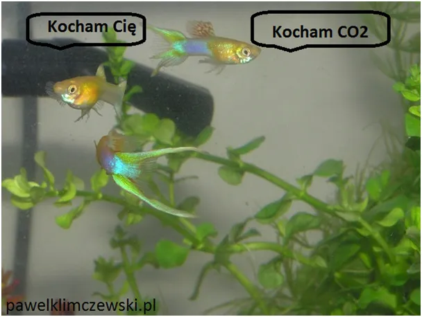
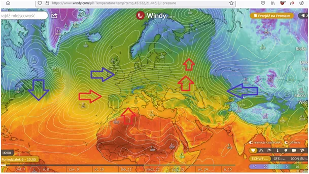
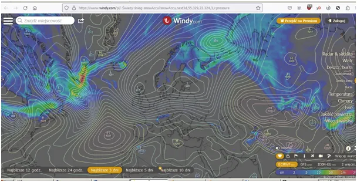
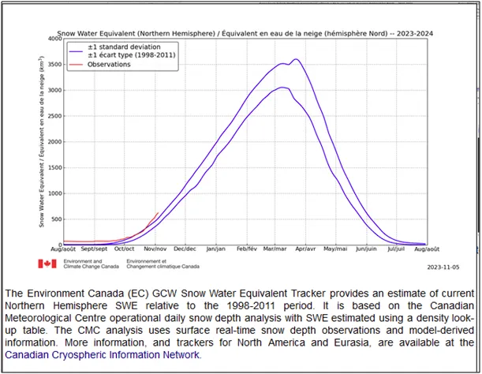
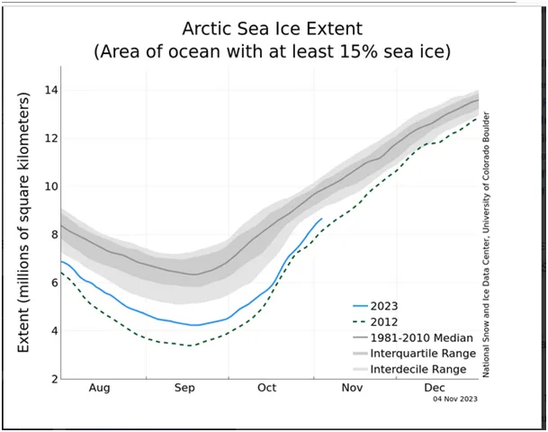
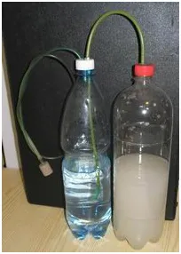
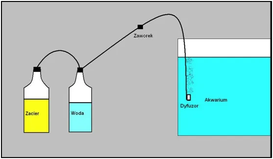

Co król Jagiełło chciał powiedzieć polskim akwarystom wybierając czas rozprawy z Krzyżakami?
Tydzień został do nowiu Księżyca, po nim jak zwykle duża zmiana aury. Tymczasem u nas wieje mieszanka ciepła znad z Atlantyku i arktycznego powietrza z północy. Daje to wyjątkowo duże opady śniegu, widoczne na drugiej mapce i pierwszym wykresie, mierzone jako ekwiwalent wody związanej w śniegu na północnej półkuli.
Od początku sezonu 2023/24 zima idzie na rekord. Szybkość zamarzania oceanu północnego też jest bardzo duża, pokazuje to wykres drugi. Tyle zmrożonej wody przeniesionej z okolic zwrotnika do Arktyki oznacza, że bilans cieplny jest szybciej pod kreską niż zwykle. Istota termodynamiki to fakt, że energia płynie z miejsca, gdzie jest jej więcej do miejsca, gdzie jest jej mniej. Jeśli do gorącego pokoju wniesiemy zimny kamień, to on się nagrzeje. Jeśli wniesiemy kamień gorący, to on będzie stygł nagrzewając powietrze jeszcze bardziej. Szybkość przekazywania energii jest tym większa, im większa jest różnica temperatur.

Kosmos, w którym jest Ziemia, jest skrajnie zimny. Rozgrzany ocean szybko oddaje ciepło, tym szybciej, im był gorętszy. Ostatecznie to ciepło ulatuje nocą w Kosmos i nigdy do nas już nie wróci. Ten to prosty mechanizm to jeden z elementów "termostatu" Ziemi, pół naszego globu przez pół doby stygnie bardzo szybko, nagrzewa się jedynie wąski pas między zwrotnikami i troszkę ponad nimi, gdy trwa lato na danej półkuli. Ten obszar to głównie oceany. Atmosfera jest tylko malutkim odcinkiem w wędrówce ciepła na Ziemi. Głównym czynnikiem absorpcyjnym ciepła w atmosferze jest para wodna, a "zaworem" wpuszczającym i wypuszczającym energię z i w Kosmos są chmury.

Ostatnio tak modny dwutlenek węgla (CO2) jest potrzebny oceanom do wzrostu morskich roślin. Samego zielonego planktonu rośnie rocznie 50 miliardów ton. Bez CO2 glony by nie powstały. Im więcej CO2 rozpuszcza się w morskich falach, tym szybciej rosną glony, a te są początkiem łańcucha pokarmowego, na którego końcu siedzi zadowolony człowiek i je pyszną rybę.


Sam produkuję CO2 specjalnym "generatorem" do swego akwarium. Trochę cukru i drożdży i butelka po wodzie wystarcza na miesiąc. Chyba król Władysław Jagiełło chciał nam dać jasny znak wybierając czas rozprawy z Krzyżakami, już w czasach, gdy był inny system miar i wag. Po 500 latach, w czasie niedoboru, okazało się, że 1410 to polski szyfr narodowy: 1 litr wody, 40 dag cukru 10 gram drożdży. Polska to potęga intelektualna świata ;)


Na rozwiniętym zachodzie akwaryści płacą setki euro za "bezpieczne" butle z CO2 i zestawem reduktorów, nadwiślańscy akwaryści potrzebują tylko 2 zł na cukier i 3 zł na wężyk. Uszczelniamy lakierem do paznokci, wytrzyma to lot na Księżyc. Twardowski pewnie zabrał tam taki zestaw.
Paweł Klimczewski